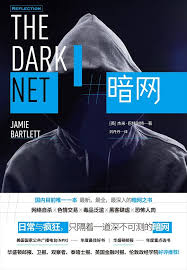

|  |
暗网 |
引言 自由或死亡
谷歌浏览器是搜索不到“暗杀市场”的，它隐身在加密的互联网空间中，直到最近，才能通过一个叫“洋葱路由器”或“Tor”的浏览器进入网站。Tor以美国海军研究实验室项目起家，目前以非营利组织的模式运营，部分资金来源于美国政府及各个民权组织，全世界数百万网民们得以借由它匿名且安心地上网浏览。简单来说，Tor依靠对计算机操作多次加密，通过多个网络节点（即“洋葱路由器”）选择路径，来隐藏计算机操作的来源、目的地和内容。Tor的用户是无法被追踪的，使用Tor隐匿服务的这些网站、论坛、博客也无法追踪，它们使用的是同样的流量加密系统来隐藏定位。
暗网
我经常会针对同一个对象访问两次，一次线上对话，一次线下面对面的交谈，然而我却好像是在跟两个不同的人对话。我在探索由不同规则、不同的行为方式、不同的主人公所组成的两个平行世界。每次当我认为自己触碰到某种网络文化的边缘时，就会发现另外一个与之紧密相连而又未被发现的秘密领域。有的网站需要掌握一些技术知识才能进入，有的网站则毫无门槛，人人可用。尽管这些网站对许多人的生活和身份信息变得越来越重要，但它们大多数是“隐形”的：一般人既查不到又看不着。因此我决定主动出击，去寻找这些隐蔽在网络世界的空间。
连接
1978年，电子布告栏系统（BBS）诞生，随之而来的是新闻网络系统（Usenet）于1979年至1980年间问世，由此网络生活进入了新的时代。不同于已退出历史舞台的阿帕网，Usenet和BBS是聊天室和论坛的先驱，只需一个调制解调器和一台家用电脑就能进入。尽管以现在的眼光来看，它们又小，网速又慢，看着十分落伍，然而在当时，这些设备却吸引了成千上万对虚拟新世界感到好奇的人们。直到20世纪90年代中期，蒂姆·伯纳斯-李发明了万维网（World Wide Web），互联网的身份由此发生了翻天覆地的变化：从电脑爱好者和学者经常光顾的小众地下聚集地，变身为数百万热情高涨的网络新人类可以进入的热门场所。
从一开始，许多BBS和Usenet订阅用户就视网络空间为集合了各式各样行为的领域，不管是离奇的、有创意的行为，抑或是让人不爽的、非法的行为。在Usenet“可替代”（“Alternative”，之后简称为“alt.”）的分类中，任何人都能设立他们想要探讨的话题讨论组。第一个创立的讨论组是食谱论坛“alt.吃货组”（alt.gourmand），之后，“alt.性爱组”（alt.sex）、“alt.毒品组”（alt.drugs），“alt.摇滚组”（alt.rock-n-roll）相继成立。“alt.”讨论组渐渐出名，立即成为Usenet里最受欢迎的功能。除了目的性明确、内容较为正式的讨论组，例如文学、计算机、科学这些以外，Usenet和BBS里更多的是以网络霸凌、黑客以及色情影像为主题的讨论组。
不自由，毋宁死
就在众人开始飘飘然的时候，极端自由主义者吉姆·贝尔首先提出网络匿名制的倡议，并得出了让人毛骨悚然的结论。在1992年底，被称为“解密高手”的加利福尼亚州极端自由主义者们通过发送电子邮件名单的方式，宣扬并探讨如何利用网络空间保障个人自由、隐私和匿名性。作为名单事件的始作俑者之一，贝尔认为，如果公民可以利用网络发送隐秘的加密信息，并使用无法追踪的货币来进行交易，就可以针对任何商品创造出正常运作的市场。1995年，他在《暗杀政治》中详细阐述了自己的想法，并通过邮件的方式发送给其他同伴，然而，即便是忠心耿耿的自由主义者们，对此也避之不及。
贝尔提出建立这样一个组织，让参与者针对某位公众人物匿名捐赠电子货币，奖金池的捐款会累计成一份总奖金，而之后能够准确预测该公众人物死亡日期的参与者，就可以获得这份奖金。用贝尔的话来说，这不算违法犯罪，只是另一种形式的赌博。但是，问题在于，如果有足够多的人对某个特定人物心怀怨念——每个人只需匿名投几块钱——奖金池的金额多到一定程度，总会有人跃跃欲试，加入预测的队伍中来，甚至亲自让预言成真，从而把奖金一锅端。加密信息和不可追踪的支付系统这时可以派上用场了。一场群众策划且不可追踪的谋杀行动就此展开。首先，这些蠢蠢欲动的刺客们会以加密形式发送预言，且只有发送者本人知道解开预言信息的数字密码。若刺杀成功，将密码发给组织方，组织方可以解锁他的（准确）预言结果。只要被组织确认预测结果正确，多半是通过新闻报道得知。这份总奖金——由所有参与者捐赠的电子货币形式累计而成——就会以加密文件的形式放到网上。当然，只有做出准确预言的人才能制作打开文件的“密钥”。在参与者们无须知晓互相身份的情况下，组织就可以核实预言是否准确，并把奖金颁发给成功预言的玩家。
贝尔认为，整个过程中最值得称赞的一点是，互联网的匿名制保障了各方人士的利益，除了刺客本人（以及刺杀对象）。即便警方得知有谁曾为暗杀行动的奖金池“添砖加瓦”，这些募捐者也可以如实交代，他们并没有直接要求采取刺杀行动。
另一边，运营暗杀市场的组织方也无能为力，他们既不知道募捐者是谁、谁做出了预测行为，也不知道是谁打开了含有高额奖金的加密文件。但贝尔觉得，重点不在于逃脱法网的制裁，而是这套机制能够利用民意的力量向候选代表们施压，促使他们有良好的政治表现。
民意代表们表现得越差，越容易激怒选民，暗杀奖金池里的金额也会越来越多，从而诱使潜在的刺客们开始行动（贝尔认为，如果当时存在这样的暗杀市场，斯大林、希特勒以及墨索里尼都会遇刺身亡）。理想状态下，没有人会遭到暗杀。贝尔希望这类市场的存在，本身可以起到警示的作用——不要轻易参与选战。他提到：“完全的网络匿名制、彻底的保密性以及安全性，再加上暗杀集资的过程便捷又安全，政府公务员如果想滥用职权就得捂紧脑袋了。最有可能的是，市长级以上的大人物们在其位的每一分每一秒都非常煎熬。”
1995年，贝尔完成他的著作《暗杀政治》时，一切都只是个假设。尽管他深信暗杀市场最终会导致这世上的任何一个政府班子垮台，但事实并非如他所想。20年后的今天，由于比特币等数字货币、Tor这类匿名浏览器以及强加密系统的出现，贝尔的预言成真了。2013年夏天，网站“暗杀市场”成立。创始人Sanjuro这样写道：“大多数情况下，刺杀行为是错的……然而在技术迭代的过程中，这是大势所趋……当有人利用法律威胁你，或是侵犯你的生命、自由、财产以及追求幸福的权利时，现在你可以用一种安全的方式，舒服地躺在客厅里就能将对方置于死地。”
第一章 揭开网络引战的面纱
一场生活的灾难
图片分享网站4chan。在4chan里，有针对不同主题的板块区，像是漫画、DIY、美食、政治和文学等等。然而，每个月浏览4chan网站的这两千万人中，大多数是为/b/区（又称“灌水区”）慕名而来。在不断涌向/b/区的各种奇葩以及色情图像构成的信息网络里，萨拉的照片只是不起眼的一角。在这里，没有自我节制，几乎每个人都是匿名发帖。
几乎每个在公众面前亮相或者网络上粉丝众多的“网红”——都会经常遭到陌生人的骚扰、恶评甚至是威胁。
网络空间的每个角落，都充斥着某种形式的引战行为。YouTube、脸书、推特，每个平台都有独特的引战模式，且每种模式为适应平台的环境而不断演进，就像达尔文雀的演化过程一样。MySpace的引战有固定的语言套路和引战语气，这些套路特别容易激怒怀有梦想的青少年歌手们；混迹于业余色情影片网站的键盘侠们，也都知道针对影片主人公的吐槽套路是什么；一些大名鼎鼎的新闻网站评论区，也经常充斥着戾气满满的恶意言论。
Finger程序
互联网的先驱——阿帕网，直到1980年都是一小群学者和政府精英的保护区。然而，这些“阿帕网用户”发现，网上闲聊跟共享数据集一样有趣。此后的四年里，阿帕网的聊天功能（其原本是辅助研究内容传送而开发的附加功能，用途类似于便利贴纸）占据了四分之三的全网流量。聊天功能的出现具有革命性的意义，是后来电子邮件的雏形，也就是我们说的“E-mail”。只要坐在办公室部门的电脑终端前，就能立刻实现多人即时对话，无须面对面沟通。这项新技术带来的机遇，有时会刺激这一小群世界级的学者们表现出古怪的一面。
其中有个研究小组，于1976年成立，负责邮件标题的内容选择。他们自称为“标题怪人”，并且创建了一个自由讨论的聊天室来探讨这个主题。这个聊天室因尖锐强硬的对话方式而声名远扬（或者说臭名远扬）。在聊天室里，争论大于一切。肯·哈伦斯腾，聊天室的创建人，他事后将这些组员形容为“一群精力旺盛到能把死马撕成碎片的打手”。
1979年，另外一组团队的学者们，在研发一项名为Finger的新功能，这项功能可以让用户得知其他用户登录或者退出系统的时间。卡内基梅隆大学的艾弗·德拉姆提议增加一个小工具：如果用户想保有隐私，隐藏网上的活动痕迹，可以选择小工具退出Finger功能的追踪。整个团队针对功能的利弊展开了多次讨论，但有人将这次（内部）讨论内容泄露至阿帕网，全网可见。德拉姆遭到了全美学者无情的抨击，因为他们认为，“小工具”会让阿帕网的开放性和透明度大大降低。
战火蔓延的BBS论战
Usenet论战
在BBS面世的同时，杜克大学的两位学者立下了更有野心的目标。汤姆·特拉斯科特和吉姆·埃利斯对阿帕网自带的精英属性和其高昂的费用愤愤不平——每年约10万美元的用户使用费——因此，在1979年，他们创办了一个全新的网站Usenet，借此他们希望打造一个任何人都能进入并使用的网站。（“任何人”指的是拥有一台计算机且可以接入UNIX操作系统的用户，然而实际上这种人人数极少。）
这些潜在目标的数量之多，使得“引战”开始肆虐全网，愈演愈烈，发展出了各种花样。以“引战”为目的的若干个群组在alt.板块建立起来。1999年，一位名叫卡比·汉普的用户在群组alt.中列出了6种引战的方式，分别是：直截了当开骂式引战（据卡比·汉普说，这种方法极易上手，“只要在光头党群组（alt.skinheads）里打出‘你这个有种族偏见的马屁精去吃屎吧！’的标题，就绝不出错！”）；无头苍蝇菜鸟式引战；打完就跑旁观式引战；胸有成竹策略式引战；一箭多雕创意式引战；拉帮结派团伙式引战。
美国黑人同性恋协会和Goatse网站
千禧年的到来，促使网络菜鸟将引战战场从Usenet搬到了新的地盘：这里不受拘束、以用户为本，也没有审查制度。之后，这种网站统一被贴上了“工作不宜”（Not Safe For Work，简称NSFW）的标签，且常常是由一些学生和青少年创立的。例如：SomethingAwful.com，Fark.com和Slashdot.com等。不同于以往的传统媒介，这些网站是由故事、各种超链接以及来自读者的建议和评论组成的。不管故事是什么内容，只要阅读量高、分享次数多就可以在排名系统中上榜，也就意味着人气的高低，在于是否能抓住社群内读者的眼球，而不是由编辑的管控权决定。这跟线上许多以内容为主的媒体一样，用户自然而然就想发布耸人听闻的消息，妄图一夜爆红。越是低俗、粗暴、奇葩、戾气重的故事，人气就越高。Fark网站在开站的第四年，访问者人数突破100万人，对当时的互联网市场而言，这个数字极为抢眼：要知道，2000年使用互联网的网民仅有3亿6000万人。
网络引战将“惹怒他人”作为具有幽默感的表现，且经常都是以脑洞大开而又令人恶心的方式。Goatse是Goat sex（山羊的性爱）的缩写形式，同时也是1999年创立的一家网站的名字（建议你不要去搜索比较好）。主页上是一张裸体的中年男子撑开肛门的照片，好事的网友们喜欢用这个网站来玩“偷梁换柱”的把戏：他们会发布一条看似安全的网络链接，实际上点开以后跳转的是Goatse网站。这类恶作剧也被称为“休克引战”（shock trolling）。
就是要逗你玩
那些新来的网民，都太把网上的信息当回事了。在这种情势下，克里斯托弗·普尔，一名年仅14岁的SomethingAwful网站狂热粉丝，发现了日本一家图片分享网站“Futaba”，这个网站可匿名发布任何内容。虽然NSFW的网站十分吸引人，但有一点，用户的身份信息是可以辨认的，且网站本身也经常受到管控限制。
Futaba网站的匿名用户创意十足，言行十分冒失且完全不受控制。此网站充斥着学生屠杀老师的血腥暴力小说、动漫成人电影以及各种不可描述的内容，引发许多道德层面的争议，网站也因此名声扫地。Futaba网站的地址是www.2chan.net，以此致敬与其内容十分相似的网站2channel。于是在2003年，普尔决定创立一个英文版的“Futaba”，命其名为“4chan”。被问及原因时，他以“穆特”的昵称发言称：“这是他妈的2chan再乘以2！”
按扎克的话说，这种“乐子”就像是毒品：为了保持同样的快感体验，你得不断增加剂量。而引战，很有可能以迅雷不及掩耳之势失去控制。著名的社交及新闻分析网站Reddit曾组织一个名为“引战游戏”的活动，规则很简单：如果你在Reddit上成功激怒了某个人，前提是对方并不知道这是在“引战”，就可以赢得一分；相反，如果你的“菜鸟”身份被揭穿，就会丢掉一分。得分最高的参赛者将会荣登排行榜。其中一位参与者进入了一个Reddit的热门板块，并发表了一个杜撰的故事，吐槽他/她与同事之间发生的矛盾。之后他/她又佯装是这个故事中的同事，要求发帖人道歉，然后开始哭诉自己并没有什么朋友。有不少Reddit的读者们被故事深深吸引，甚至有人要主动给“被欺负的同事”送花安慰。所有人都上当了。“场面很壮观。”一位目睹事件全过程的当事人回忆道。最终，“引战游戏”被Reddit叫停。这对于向来标榜自由言论的主办方来说，确实有些反常，但另一方面也证实了Reddit的网络菜鸟并不是少数群体。
初遇菜鸟
扎克同意向我透露他的藏身地之一，邀请我进入一个他两年以来经常造访的秘密通道。这是一个隐藏于知名社交媒体网页的私人群组，扎克形容这里为“网络菜鸟的海盗基地”，群组主页——也就是一般用户都能看到的页面——是一组自慰的照片，扎克告诉我：“这只是做个样子，就是为了吓跑那些蠢货。”要想打入内部，必须得到现任群组管理员的许可，才能拿到权限，进入群组内部的邮件系统。进入群组之后，才发现内部混乱不堪：每天都有持续不断、长篇大论的争辩及忍俊不禁的讨论，有的讨论甚至会引来20名管理员一齐加入，他们当中有些人是相互熟识的，有些人则并不熟悉。群组成员都使用假名，因为每个人都曾被网站封过号，所以我的存在并不显眼，毕竟我可以是他们当中的“任何一位”。这里时时刻刻都上演着彼此间的“引战”，然而大多数的言论都令人捧腹，且内容极为尖锐。按扎克的话来说，其中至少有两位参与者是大学教授。这个群组就像是网络菜鸟训练营，成员之间可以彼此操练新的战术、打擂作战，同时也不会导致严重的后果，另外还可以在此休息，与同辈一起放松释压。
跟Usenet菜鸟一样，他认为引战的成功关键在于对方的反应：“或许我的手段有争议性，但我就想证明他们喜欢当‘弱者’的感觉，他们的反应太赞了，有人威胁说要烧了我的办公室，烧了我家，甚至还有人要强奸我的孩子。哈哈！我没说错吧！他们的反应证明了我说得没错！”
菜鸟背后的真相
在上世纪80到90年代，随着网民数量的不断增加，心理学家开始关注电脑是如何改变人们的想法和行为这个议题。1990年，美国律师兼作家迈克·戈德温针对Usenet的行为模式提出了一条自然法则（也就是著名的“戈德温法则”）：网络上的讨论持续时间越长，用户发言中将纳粹或希特勒作类比的可能性就越接近百分之百。换句话说，在网络上的发言越多，就越容易变得邪恶肮脏；如果上网聊天的时长达到一定程度，就必然存在这种“恶性”。（时至今日，在大多数新闻报纸的网络留言板中仍可观察到符合“戈德温法则”的言论。）2001年，心理学家约翰·舒勒提出著名的“网络去抑制效应”，解释了这种行为的成因。他指出，有六种因素促使网络用户忽视了现实生活中的社会法则和规范。舒勒认为，一方面我们无法了解也无法看到对方是谁（对方也是如此），双方的交流模式是即时性的，表面上毫无规则，也无须担负责任；另一方面，网络的一切都好像是一个新的现实世界，人们会做出现实生活中不会出现的举动，舒勒称这种心理为“恶性去抑制化”。据其他学术研究成果表明，65％到93％的人际交流属于非语言类型：面部表情、语气和肢体动作等。简而言之，人类的大脑经历数百年的演变，会下意识地观察到这些“暗示”，因此我们得以更有效地解读彼此，产生共情。然而，通过电脑交流时，这些“暗示”通通被抹掉了，以至于人际沟通变得模糊且没有判断依据。或者，又正如连环漫画《便士游乐场》里提到的：“网络大笨蛋理论：正常人＋匿名＋观众＝彻底的笨蛋。”
对付网络菜鸟，最简单的招数就是拿掉“匿名”这顶帽子，强制网站或平台规定用户以实名制登录。当然，这也无法避免网络的恶劣风气，不过至少可以迫使菜鸟能多为自己的行为负责，或者提醒他们在口出恶言之前三思。然而取消网络匿名制也有它的弊端，匿名制并不是为庇护网络菜鸟而生的现代产物，而是提供一个手段，让大众在某些情况下可以坦诚相待，无须顾忌身份。考虑到这点，取消匿名制会是很冒险的做法。
GNAA（美国同性恋黑人协会）常常发表一些荒谬的新闻故事，希望懒惰无能的记者前来抄袭，他们的做法经常是：一篇来自GNAA的报道指控有黑人在飓风袭来之时强抢民宅，偷窃主流媒体版面曾多次报道过的宠物。
引战是一个非常宽泛的概念，从/b/区的恶霸到业余哲学家，从轻微的冒犯行为到非法犯罪，都属于引战的范围。我们对在数字世界得到赞赏的渴望日渐增强，导致越来越多的人乐于在网络上分享个人生活中最为隐秘的一面，且分享对象常为完全不相识的陌生人。个人的喜好、想法、下一处目的地，在网络中分享的个人信息越多，就越容易成为菜鸟的攻击对象。
第二章 独行者
网络中的保罗是个活跃分子，是激进的“白人骄傲”身份拥护者；而现实中的保罗，则是独居在一间小房子里的30多岁单身待业男青年。
一个全新的平台
截至2013年，全网约有2万个运营中的“仇恨网站”（hate websites）、社交网络群组及论坛，而且这个数字每年都在增长。网络世界已然成为种族主义者和民族主义者的避难所，在此极端政治分子得以发声，宣传政治理念并号召支持者们加入。
“独狼”这个称谓的走红，源于上世纪90年代美国白人至上主义者汤姆·梅茨格的“倡议”，他认为要想成功躲避侦查，新纳粹的同胞们不要抱团，应单独进行暴力行动。
在布雷维克的眼中，互联网遍布着机遇。他提到，如果想动摇大众对某件事情的看法，维基百科是个很合适的平台——只需对词条的内容进行微调即可。
保卫英国联盟
架构松散的民族主义行动波及了整个欧洲，而保卫英国联盟（English Defence League，以下简称“EDL”）的出现，则标志着新的浪潮即将到来。该组织行踪难以捉摸，但却深切关心着国家大事，他们认为：不接地气的自由派们推崇的大规模移民（尤其从穆斯林国家而来）正在破坏民众的国家认同，精英主义者并不知晓，或者换句话说，并不在意这些移民对普通人来说意味着什么。这种通常都是表面上的“反种族主义”，把“平等、民主、自由”当成口号来喊，同时也是英国传统文化（有时是基督教文化）的价值要求。总之，他们坚信伊斯兰民族的人们和英国人的价值观念体系水火不相容。
点赞
2012年底，各成员意识到，与长期的政治变革相比，网络聊天灌水和周末的示威行动，是胳膊拧不过大腿的，组织内部对活动的原始热情开始渐渐消散。此外，松散的组织层级，使EDL从原来众志成城的同伴迅速分解为冷目相对的派系斗争。到了2013年初，EDL已处在分崩离析的边缘。当时托米因违反禁止参加示威活动的保释条例，已在狱中待了数月。听到消息的托米十分焦虑，再加上铺天盖地的死亡威胁信，他决定就此退出。事情的转机发生于2013年5月22日上午，热闹喧哗的伦敦南部大街，光天化日之下一位叫李·里格比的英国士兵被两名极端伊斯兰分子杀害。此后的数周里，EDL的网络呼声空前高涨，托米发觉自己已身处主流媒介的浪潮之中，全身而退是不可能了。
管理员与主页运营
保罗泡在主页上的时间越来越长，作为尽职尽责的版主，他时时刻刻都在小组里分享故事，为组建虚拟世界的朋友圈添砖加瓦。这种社交活动，也充满着政治色彩。成员们在相互了解相识的过程中，同志之间建立起了团结一致惺惺相惜的感情。“我们有共同的敌人，是一个团队，团结就是力量，一定可以做出一番成就！”他如此说道。然而，虚拟的社群也会把人压得喘不过气。随着保罗的在线时长越来越久，他的观念也变得极端起来：他开始关心起伊斯兰分子，且认为他们可能会造成种种“威胁”。“我看过他们的作战策略，阴险狡诈，他们想潜移默化地影响大众的国家认同，然后推翻我们的政府。”
“你每天大约花多长时间上网？”我问。“仔细算一算的话可能得吓一跳，大概90％的时间都在吧，我几乎没有时间去做别的事情或者去见什么人。”
保罗告诉我，在某种程度上他十分希望参政，然后搬到大一点的城市生活。然而，缺乏工作经验、没有相关资历和钱财支持，保罗意识到这一切不过是痴人说梦。他告诉我，不久前，他曾在街头偶遇过EDL的支持者们，但是他没有过去打招呼。在线上，他已是知名政治团体人人敬仰的核心成员，坐拥来自世界各地的粉丝支持者和好友；然而走出网络大门，他只是芸芸众生的一介平民。
网络空间的战役
说到人肉搜索，其中最臭名昭著的就是于2001年创立的极右翼网站RedWatch。该网站的宗旨就是“找出左翼叛徒”，只要犯下“威胁及骚扰英国民族主义者及其家人”的罪名，就会把住址、工作单位、孩子姓名等他们能获取到的任何个人信息，通通挂在网上。
故事结局
在采访保罗的几个月里，我尝试着分析，是什么让他产生了如此大的转变，是回音室效应吗，还是公共领域的影响呢？在线上，保罗始终表现得很冲动，观点十分尖锐，他对于自己的“公知”身份很是自豪。尽管保罗一直视布雷维克为“英雄”般的存在，但同时他强烈表示虽然自己言辞尖锐但并没有伤害任何人。我开始担心他的所作所为会不会招致报复行为，毕竟网络喷子的数量庞大，虽说最后付诸行动的比例甚少，但人心都隔肚皮，更何况网络，你永远都不知道下一秒捅刀子的会是谁。因此，每次跟保罗见面，我都有种如释重负的感觉。保罗的吐槽和谩骂，永远都以一句抱歉为开场白，毕竟对他而言，线上和线下完全是两个世界。
最后一次与保罗联系时，听闻他已经换了一个全新的网络身份——女性，档案还在风风火火地建立中，主要活跃于多家政治网站的留言区。尽管过程缓慢，且步履小心而谨慎，然而保罗一如既往地透过电脑屏幕，致力于拉拢更多的人走进他的网络世界。
第三章 潜入“高尔特峡谷”
如今，阿米尔正专心于研发比特币软件，这样的工作状态已持续了四年之久。毋庸置疑，他已是目前世界上最了解这一新兴货币的专家。阿米尔现在在台上分享的，就是他最新的比特币项目——他称之为“暗黑钱包”。
比特币基金会于2012年成立，是负责比特币事务的半官方机构，目的是将比特币的核心产品及操作流程化，保证系统能安全高效地运作。尽管所谓的“官方机构”是不存在的，然而没有比较就没有伤害，比特币基金会已是众多比特币机构中最有“领导风范”的一家了。
阿米尔以他遇到的技术难题为开篇，来隆重介绍“暗黑钱包”的诞生过程，情到深处不免激动起来：“比特币才不是什么革命性支付方式，它是个妥妥的政治工具。”
与阿米尔持有相同观点的人们认为，比特币只是为争取匿名制及实现网络自由而打响的第一炮。阿米尔坚信，只有消除网络审查与监管，人们得以自由地畅所欲言，“为所欲为”，成为任何一个自己想成为的人——这种自由甚至可以引导政治革命。
电邮名单
梅提出，目前的需求是开发出可以帮助人们避开政府监视的新兴软件。建立这个组织的目的就是找出解决问题的方案。
“与其投入时间、金钱和精力，来劝服国家废除大规模监听及各种形式的审查制度，”哈米尔写道，“倒不如教给每一位对此感兴趣的自由主义者学会使用密码学自行废除这些制度，自谋出路。
自罗马帝国时代开始，直到20世纪70年代，运行的都是“单钥”（single key）密码体制，就是使用同一密码既可保密信息又可解锁信息。现代计算机技术使得编码功能更为强大，但是实际上原理并未发生变化：如果你想与某人进行私密对话，仍然需要解锁的密码，这里就出现了一开始遇到的那个问题。惠特菲尔德·迪费和马丁·赫尔曼，两位来自麻省理工学院的数学家在1976年发明了“公钥加密系统”，提供了解决问题的方案。每位使用者都有一个专属的加密系统，里面含有两把“密钥”，其组成虽有不同，但都来源于同一个共享的原始号码，它们在数学领域其实是有意义的。如果要从数学层面来分析，过程就很复杂了，但是理念很容易理解：“公钥”的权限是公开的，其他人也可以利用它将想传递的信息通过加密，编成一堆无意义的乱码，而这堆乱码能且只能被你手里的“专用密钥”来解读。公钥加密系统的问世，改变了编码的应用前景。双方无须交易密码，甚至可以在毫不认识的情况下，相互发送加密信息。直到上世纪90年代初，这类强加密系统都一直为政府专用。此外，美国政府曾于1976年将强加密系统归为“军需品”一类，且多次对加密系统进行无证非法出口。
随着越来越多的人涌入网络空间，美国政府愈发关心起网民们究竟上网做些什么。1990年，FBI发起了一项名为Sundevil计划的打击黑客犯罪行动，然而雷声大雨点小；紧接着，1991年初，美国参议院的部分议员提议，要求电子通信服务商向政府提交民众的私人信息数据（其中最核心的条款是由当时的司法委员会主席、议员乔·拜登提出的S.266条款）。更糟糕的是，1993年美国政府推出了加密芯片“剪刀芯片”计划：将网络加密系统列为工业标准——也就意味着美国安全局将掌控互联网中的所有密钥。
得知拜登推行S.266条款的消息，齐默尔曼下定决心要完成这个任务，虽然过程十分曲折，某段时间他差点儿要变卖掉自己的房子来维持生计。1991年，由齐默尔曼开发的加密工具顺利完工，他第一时间就全部放到了网上（平台自然是热门的Usenet的小组），提供免费下载。这个系统被他称为“完美隐私”（Pretty Good Privacy），简称PGP。几周之内，PGP的全网下载及分享量高达数千人次。在之后的采访中，齐默尔曼表示：“在PGP诞生之前，如果不通过电话、联邦快递和传真的方式，要想实现长距离的两人之间通话且数据不被拦截，是根本不可能的。”直到如今，PGP都是使用最为广泛的邮件加密工具。
更安全的网络环境，才能得到更多人的信赖。而美国政府采取了相反的策略，他们对曾在网上发布PGP源代码的齐默尔曼以“出口军火”的名义介入调查。美国海关总署立即对此展开刑事侦查，企图以违反《武器出口管制法》的罪名起诉齐默尔曼。
赛博朋克们酷爱《1984》，宗教科幻小说《冲击波骑士》（The Shockwave Rider）《真实姓名》（True Names）以及戴维·肖姆发表过的一篇文章《无识别的安全性：让“老大哥”臣服的交易系统》，然而这之中影响最深远的一本是《阿特拉斯耸耸肩》。在安·兰德的巨著中，描绘了一群生活在反乌托邦式美国社会的高生产力公民，因拒绝缴纳税款而消失在一个与世隔绝的宝地——高尔特峡谷，在这里人们可以不必追求伟大卓越的人生，自由自在不受拘束。梅渴望建立一个与高尔特峡谷类似的虚拟社区，社区的经济活动不受国家掌控，而是依靠内部成员之间的协商一一安排。
对阿桑奇而言，密码是撬开政府大门、“看穿其虚伪假面”的利器，可以迫使政府更加公开透明，肩负起责任。当然，如果能顺势扳倒政府，那就再好不过了。阿桑奇的这些灵感都来自名单上另一位赛博朋克的启发，其名叫约翰·扬。扬在1996年创办了网站cryptome.org，并以此为据点发布各类泄密文件，尤其是政府机密文件。阿桑奇在2006年与扬取得联系，上来便自报家门：“你认识我，我当时在赛博朋克用的是另一个名字。”之后阿桑奇说明了来意，他计划成立一个全新的组织，名叫维基解密，并且坚信这个组织可以改变世界：新科技和加密技术不仅减少了机密文件泄露的技术难度，也使得这类活动的大规模推广成了可能。我们的初衷是，在人类政治的天空中捧出一颗冉冉新星。
近十年的时间，赛博朋克电邮名单一直占据着密码世界的中心。成百上千人通过它来学习并发布编码，躲避有关部门侦查，探讨极端政治事件，等等。然而电邮名单最终还是被吉尔摩从主机toad.com撤下，于2001年停止了运营。下架原因至今不明，据吉尔摩的说法，电邮名单已开始“走下坡路”。尽管被迫解散，电邮名单却留下了辉煌的成就：匿名转发器遍布网络；用户不受追踪即可浏览网络的匿名浏览器方兴未艾；检举网站Cryptome俨然成为情报机构的眼中钉肉中刺；更值得一提的是，美国政府已放弃对菲尔·齐默尔曼的调查，而PGP的使用者已遍布世界的各个角落。
2008年初，密码邮件名单中一位颇具神秘色彩的成员中本聪（Satoshi Nakamoto），发布了一条震惊世人的消息。
前往Calafou
Calafou是一处探索合作社居住模式的实验社区，目前由住在这里的约30位永久居民具体运作并管理，同时也与合伙人“卡塔兰整合合作社”（Catalan Integral Cooperative，以下简称“CIC”）合作经营。CIC的想法是挖掘资本主义体系之外的全新生活方式，一种可持续且符合道德伦理的公社生活模式，一切都立足于经济和政治自治的原则。
墙上的喷绘图是20世纪70年代臭名远扬的电话黑客Captain Crunch和英国天才程序员艾伦·图灵的巨幅图像，让人无法质疑该组织的忠诚信念。
巴勃罗说，“暗黑钱包”不过是Calafou众多项目中的一个分支。就在我来之前不久，这里还曾举办过3D打印的活动。隔壁的房间在进行一项科学实验，正在培育一串可储存能量的阿米巴变形虫，他们的长线计划是发明有机计算机。住在这里的其他居民们，有人在研究堆肥厕所，有人忙于制造太阳能板，有人在售卖窑炉，还有人在致力于搭建开放源代码的电子通信设施。目前所有的公寓都处于满房状态，再加上这里经常举办公共活动，更是有许多人慕名前来。
巴勃罗告诉我，Calafou不仅仅是一个居住空间，也是一种哲学。Calafou概念的诞生及创立得益于一位名叫昂里克·迪朗的人。“他真的很棒。”巴勃罗激动地说。事实的确如此。迪朗被称为“银行的罗宾汉”，2008年末，他对外发放20万份免费报纸，阐述自己如何花费两年时间从39家银行“骗”走50万欧元。起初，为确保良好的信用等级，迪朗会按时归还借款，之后他越借越多，并不再向银行还贷，转而把钱用于扶持各种社会运动（其中包括Calafou），以及报纸的出版事宜。2009年，迪朗开始推广CIC，因为CIC完美地实践了他所创办的第二份报纸中阐述的理念：没有资本主义的生活，我们可以做到！2009年，迪朗遭到六家银行起诉并被逮捕，两个月后保释出狱。2011，他又被国家公诉人要求判处八年有期徒刑，不得已走上了亡命之徒的道路。
2011年4月的“黑色星期五”，美国三家最大的线上扑克公司的创始人在一次刑事侦查中均被起诉，之后FBI便关闭了这些网站。（2012年美国政府撤销了针对PokerStars及Full Tilt Poker的全部民事诉讼。）数以千计的扑克玩家（包括阿米尔的一些扑克网友）都在这一过程中散了点儿财。于是，阿米尔开始试着搭建自己的P2P（点对点）扑克网站，来取代线上抽成的扑克公司。然而他找不到一家合适且安全性高的支付系统。就在2011年，他发现了比特币，便开始进行一切与比特币相关的计划，甚至创办并运营了英国第一家比特币交易所“Britcoin”，在这里，人们可以不用通过美元，直接用英镑就能换到比特币。在对比特币进行深入研究之后，阿米尔发现比特币并没有大家想象的那么安全和匿名。当然，比特币是一项伟大的发明，然而只需再增加一些附加功能，就能产生更具颠覆性的效果。“暗黑钱包”的构想便由此而来。于是，阿米尔拉上巴勃罗和另外一位小伙伴科迪·威尔逊，三人一同搬到了Calafou。科迪是一位无政府主义编码者，史上第一支3D打印枪就是他发明的。三人还通过众筹网站Indiegogo一个月内募集到了50000美元的启动资金。
在阿米尔眼里，比特币就是用来推翻政府的工具。他告诉我“基金会那些人试图控制比特币”，他和科迪都表示希望“暗黑钱包”能让人们更安全地购买毒品，任何与政府妥协的协商都违背了比特币的目标。
中本聪
虽然蒂姆·梅和其他赛博朋克没有研发出数字加密货币系统，但是却预见到它们能够带来的巨大效力。这个伟大的构想归功于一位叫戴维·肖姆的编码者。尽管他从未参加过任何会议，然而他对匿名支付系统的研究启发了包括梅在内的许多同行。加密货币系统的基本原理是，每一单位的货币代表一串独一无二的数字串，用户之间可以通过网络相互传送货币进行交易。但问题在于数字串极易复制，且无法避免多次交易的情况，这样一来货币就变得毫无价值。肖姆为这个问题提出了解决方案，他创建了一个集中分类账簿，记下每个人的交易记录，以此来验证每一单位的货币不会同时出现在两个地方。为此，他还在1990年创办了自己的公司“DigiCash”来实现这个构想。然而仅仅依靠一个中央系统来管控全网的交易账户，听起来有些不太靠谱，因此DigiCash并没有引起什么反响。
中本聪通过加密邮件名单提出了一种全新形态的数字加密货币，即创建分布式而非集中的验证系统来解决这个问题。他称这种货币为比特币。一位经验老道的赛博朋克哈尔·芬尼回忆道：“起初，他的举动引发了很多争议。”见惯了业界浪潮来来去去的芬尼一开始也不以为意，后来他注意到中本聪的方案有其与众不同之处，其中提出了一个他从未见过的叫作“区块链”的概念。
这个概念是指，一定数量的比特币存储在某个比特币的地址，打开地址的密钥是一串独一无二的字母和数字组合，可以放在网站、桌面、移动电话甚至一张纸上。每当有人用比特币支付进行交易时，就会有一笔交易记录储存在区块链中。交易记录集中放置在区块中，每个区块可以存储10分钟长的交易内容，区块按时间顺序排列，后面的区块都带有前一个区块的数字签名，确保顺序不会弄乱，且新的区块只能链接在前一个区块的末端。区块链交易记录（即每次交易都会产生的记录）由安装比特币软件的用户共同维护。为确保系统正常运行，区块链经常需要每个使用软件的用户的电脑端进行验证。这样做的目的就是在任何时间节点，系统都会准确记录用户钱包中的比特币数目，因此这些货币无法二次复制，也无法重复消费。比特币的发明，首次使货币所有权的转让成了可能，无须复制，且全程不需经过任何中央掌控的账目系统审核，这真是天才之举。
比特币如此受自由主义者的喜爱，究其原因，是它将货币供应的控制权从中央手中夺回。中本聪对全球银行体系极度不信任，而且他将自己创造的加密货币视为破坏这一体系的重要工具。他痛恨银行家和政府把控着货币供应的钥匙，却利用职位之便塞满自己腰包的不齿行径。他在《创世块》（genesis block，比特币区块链上的第一个区块，也就是中本聪与芬尼完成第一笔交易的区块）中写下格格不入的一行字：“《泰晤士报》2009年1月3日，财政部陷入银行寻求二次紧急援助的困境。”
为避免政府和中央银行的介入，中本聪为比特币的供应总数设定了上限：2100万。尽管比特币能够使用现实世界的真实货币进行买卖，但比特币不会通过任何中央机构铸造发行。用户只能借助计算机的运算，每次在区块链验证交易后，赚取数量微薄的新的比特币（这个过程俗称“挖矿”）。随着越来越多的比特币产出（目前已“挖”出的比特币数量为1300万），要想开采余下的比特币，则需要更为强大的计算机运算能力。比特币的单位可以分割到小数点后八位，不可分割的最小单位是“中本聪”。据预测，最后一枚比特币将在2140年开采完毕，但这并不是终点，中本聪把比特币设计成一套P2P、加密的匿名系统。这就意味着很难将比特币交易与现实世界中的个人身份联系起来，因此缴纳税费及追踪用户会变得十分困难。虽然区块链会记录下每个人的交易明细，但并不会记录用户的真实身份。
中本聪在名单的最后一次发言记录定格在2010年。之后，正如一名真正的赛博朋克一样，他突然消失在网络的大潮中。阿米尔的预见是对的，比特币的核心是一场政治运动。但同时，它也是一个开源项目，对众多像是比特币基金会的人来说，比特币的未来不过是一套支付机制；但对阿米尔来说，它的存在违背了赛博朋克的初心。于是，他萌生了创立“暗黑钱包”的想法。
暗黑钱包
阿米尔惬意地坐在“黑客空间”，跟我聊起了他的最新计划。总而言之服务一个目标：使比特币更加匿名化，更值得信赖。因此，“暗黑钱包”会增加很多新的特性，如果使用方法得当，将会对“体制”产生很大的冲击。其中一个核心创新点是“多方签名”（multi-signature），只有系统三方中的两方同时签字，比特币交易才能顺利验证；第二个是“去信任混合”（trustless mixing），这项特性使得比特币交易过程更加难以追踪。此功能建立在CoinJoin项目的基础之上，CoinJoin将同时进行的所有比特币交易打乱，混在一起，然后变更其原本的交易路径和终点。最终每位用户会收到正确的交易数目，然而关于发送方、收件方以及传送内容的信息，无人知晓。第三个创新点是“隐匿地址”。“暗黑钱包”会生成假的比特币地址作为接收方，这一举动，进一步增加了将钱包与现实中的个人身份相连接的操作难度。尽管这些功能特性并不能使比特币交易过程完全匿名化，但确实是一个重大的进步。阿米尔预计，将会有大批用户利用暗黑钱包提供的全新功能，来提高系统的安全性。
赛博朋克走向主流
“这么说吧，此时此刻，掌握你的脸书账号数据的人并不是你，而是马克·扎克伯格的服务器，脸书管理员可以利用这些数据做任何事，因为他们是服务器的所有人，只有他们拥有你的数据。这并不是真正的自由，这是集权式的数据管理模式。而由区块链搭建的社交媒体平台则完全不同。你发布的消息只是公共区块链记录中的一部分，平台的任何用户都有自己的记录备份，任何网络行为都可以匿名进行，审查几乎是不可能的。更重要的是，没人能随意关闭平台，因为它的所有权并不属于任何人。”
目前已有许多人在做这样的尝试。其中有一家社交媒体平台叫作Twister。米格尔·弗雷塔斯是其主要开发人员之一。起因是英国首相戴维·卡梅伦表示2011年伦敦暴乱事件之后，政府曾考虑让Twitter退出英国市场。借由这个契机，米格尔连续工作数月——无薪工作，就像齐默尔曼当年开发PGP一样——将区块链模型转换为社交媒体平台，于是Twister诞生了。他表示：“我尝试找过几家P2P的微型博客平台，但没有一家合适的，如果以脸书为首的社交平台掌控着所有话语权，仅凭网络本身是不能促进信息流通的。”
目前市场涌现了许多定位为大众市场而非小众人群的新一代社交平台，这些平台不仅为用户自由言论及个人隐私提供保障，而且界面十分友好，性价比也高，Twister只不过是众多平台中的一家。Jitsi是一款免费、安全、开放源码的语音、视频会议和即时通信应用，难以相信它的前身竟是斯特拉斯堡大学的一个学生作业。Jabber，另一款即时通信服务应用，采用业界标准SSL（Secure Sockets Layer，安全套接层）加密，运营团队均为志愿者，并且内部所有信息已存放在一家实体的安全数据中心。菲尔·齐默尔曼目前正在参与一个叫作“黑暗邮件”（Darkmail）的项目，提供自动端对端的加密邮件服务。
斯马里·麦卡锡是个坦坦荡荡的电脑极客（geek）：不仅是电脑达人，同时也是极端组织冰岛海盗党的创始成员。他还曾在维基解密创立之初跟朱利安·阿桑奇一起共事过。严格说来，斯马里算不得典型的赛博朋克——他的想法与安·兰德的理念格格不入——然而他坚信，网络隐私是公民的基本权利，并且对国家的网络监管表示十分担忧。此外，他也认为加密是政治课题中不可或缺的重要组成部分。斯马里希望用户使用PGP加密所有的邮件，即便发送对象是亲近的家人和朋友。他解释道，这么做是为了向确实需要加密服务隐藏秘密的人提供足够的“掩蔽流量”。如果人人都用PGP，那加密技术就失去了它存在的意义：群体中的差异便不复存在。斯马里曾查看过美国国家安全局的几项计划，以及美国政府的总体安全预算，据他估计，目前美国政府每天花费在监控全球每一位网络用户的成本是13美分，他希望能通过默认的加密服务（就像他发明的这种），让这笔费用提高至一万美元。
斯马里表示，加密系统十分冷门的原因在于，人们认为启动这些程序复杂又费时。相比之下，谷歌邮箱就很显得便捷、简易上手。于是，斯马里和其他两位同事在2013年8月通过Indiegogo网站众筹到16万美金，自行开发了简单好用的邮件加密系统Mailpile。斯马里说：“Mailpile的功能完备，使用方法也很简单。”说完便打开笔记本电脑给我预览了一下界面，看上去确实不错。
什么都比不上加密派对！
对阿米尔等人来说，使用科技已成为生存本能。然而大部分人都还不知道如何用匿名浏览器Tor上网、如何使用比特币支付以及如何用PGP发送加密消息。举办加密派对的目的，就是向听众普及如何使用加密技术，保护个人隐私。
自2012年起，据本人统计，在全世界范围内，至少举办过350场公开性的加密派对，且活动横跨各大洲，每场的参与人数在5至500人不等。坊间甚至还流传着一本免费的加密派对手册，来自世界各地维权人士在24小时内以众包（crowdsourced）的方式编纂完成，时至今日，手册上的内容还在不断更新。
负面影响
戴维·奥曼德，政府通信总部的前负责人，目前的身份是伦敦国王学院的客座教授，虽然已离开前东家，但是戴维与英国情报机构联系仍然十分密切。他表示：“为了保障公众安全，情报机构监视可疑的对象是十分必要的。网络为躲避监控提供了更多样化的技术选择，一般情况下确实是这样，恐怖分子和犯罪团伙会运用他们可接触到的最新技术，且实时跟进通信安全的最新进展，整个过程像是一场军备竞赛。”尽管未经证实，有传言说9·11事件的恐怖分子就是使用PGP技术进行通信的。“这个我不太了解，”奥曼德回答，但他确信，恐怖分子对斯诺登事件很感兴趣。“可以确定他们很关注事情的动态发展，俄罗斯政府和中国政府也是如此。”
如果政府将个人列为安全调查的重点打击对象，却因匿名浏览查不到任何网络记录时，放心，他们会用尽各种原始的方法将你制服（比如在你床头装上窃听器）。
进入峡谷
梅预计在接下来的十年中，人人熟知的政府将会分崩离析，取而代之的将会是一个数字“峡谷”，他称之为“网络之地”。在那里没有政府的统治，公民可以自由地成立利益共同体，一对一直接交流。梅对短期内引发社会底层的骚动不抱幻想，尽管从长期来看它会产生积极作用。1994年他曾写下：“加密无政府主义的未来掌握在抓住机遇的人手中，在握有资本的人手中。”现在的他仍然没有丢掉激进的本质：“我们将见证乌合之众的毁灭。”他半开玩笑地说道，“地球上大约有四五百万人的命运是悲惨的，加密技术只能保护这个世界1％的人的安全。”他认为，短期内人们的生活会很煎熬。只有丢掉辅助双腿的拐杖——条例、法律、社会福利——人类才能发挥潜能并获得成长。
在Calafou，有一个叫作“民众集会”的制度，住在这里的居民会聚在一起商讨项目，共同解决问题、分摊责任义务等。这有点像古希腊时的集会模式：小社群内部的每个人都可以参与到集体决策的过程中来。“黑客空间的人都不参与这个，”阿米尔说，“我们不相信这种花里胡哨的东西，我们只想要个人自由，如果你有想法，抓紧去做就是了！”就在我要离开Calafou，穿过水泥桥墩到外面的世界时，阿米尔对我说：“这世界有很多人遇事只会自怨自艾，我们是真正做出行动、解决问题的人。身为赛博朋克，就是要写代码。”说完他便走进了他一手创建的“峡谷”。
第四章 三次点击
Tor的隐匿服务网站很难进入浏览器。虽然这种服务和普通网站在很多方面类似，但是它很少连接别的网站。而且URL地址与我们较为熟悉的.com和.co.uk.形式不同，只是一串毫无意义的数字和字母：h67ugho8yhgff941.onion。更糟的是，Tor的隐藏服务网站更是随意变动地址。
追溯历史
警方发现了一个由数百名来自三十多个国家的成员构成的组织——仙境俱乐部（Wonderland Club），他们通过强大的加密软件在网上进行秘密交易。有意向加入的人必须得到现有成员的推荐，同时还需收藏至少一万张不同的儿童色情图片方可加入。警方在该组织总共发现了75万张图像和1800段视频。2001年，又有7名英国人因在互联网中的不法行为而获罪。
随着互联网的普及，全新的制图据点开始涌现。21世纪初，臭名昭著的乌克兰网站洛丽塔之城（Lolita City）在网上散布了约50万张色情图像。2004年该网站关闭，其两任负责人都曾被拘留，但之后也都被释放。
2007年10月，“虐童图片数据库”（Child Abuse Image Database）是由国际刑警组织搜集的图片集合，已累计搜集到50万张不同的儿童色情图片。截至2010年，由儿童性剥削和网络保护中心（CEOP）专家组织建立的英国警方数据库，储存了超过85万张图片（之后他们仅仅从一名罪犯的藏品中，便发现了高达200万张图片）。2011年，由美国执法机关交给国家失踪及性剥削儿童中心（National Center for Missing and Exploited Children）的儿童色情图像和视频就有220万份。
浏览人
恋童癖和认知扭曲
在这些组织中最为人熟知的，就是北美男性之爱协会（North American Man/Boy Love Association），该协会于1978年成立于美国，早在互联网诞生之前就开始运作了，其宗旨是“终结对‘两情相悦’的男人（男孩）的极端压迫”，事实上，这一主张除了让内部成员自我意淫一下，并无其他作用。
虚拟虐待与真实虐待
遏制浪潮/中流砥柱
互联网观察基金会的技术研究人员经过谨慎的取证工作后发现，如果浏览人通过某些特定网站，且以一定顺序进入此网站，则会触发程序，网站会发送给浏览人同一网页的隐藏版本。这一系列操作被称为“伪装cookie”网站。
互联网观察基金会的大多数调查资料都来源于表层网站，也就是那些可以通过谷歌浏览器等一般浏览器访问的网站，这些内容通常存放在警察调查力度不大的国家，可能是因为警方能力有限或资源不足。通常情况是，用户会通过一个链接进入“网络封锁空间”，这是一个被黑客入侵的网站，但该网站的经营者对于此处储存色情文件的事情并不知情。基金会收到的转介案件中，约有四分之一的网站是营利性的商业网站，用户必须用信用卡付费才能进入，并通过发送垃圾邮件的方式达到营销目的。
接下来采取措施的一方则是联邦调查局。2013年8月，他们逮捕了二十七岁的爱尔兰人埃里克·约恩·马克斯，并进入了漫长的调查期。联邦调查局指控这名爱尔兰籍男子涉嫌经营托管网站Freedom Hosting，为Tor隐匿服务器中多数的非法网站提供服务器空间，包括犯罪黑客网站HackBB、洗钱网站以及数百个儿童色情网站。该托管网站下架之后，大部分主要的儿童色情网站也随之消失。
马克斯被捕后不久，这些网站的副本或“仿版”开始出现，并通过新的服务器再次开始运营。渐渐地，随着用户们建立起新的服务器，并重新上传自己的收藏内容后，正常运作的网站链接再次出现在了隐秘维基上面。然而接下来，几位独自行动的“正义人士”坐不住了：2014年3月，一位名为“Intangir”的黑客连同另一位推特名为Queefy的同伴，设法控制了隐秘维基，关闭了该网站通道及上面所有的儿童色情网站的链接。不过当读者读到本书的时候，隐秘维基极有可能已东山再起。
落网
逮捕之后
关于儿童色情内容一个极为尴尬的情况就是：由受害者自制上传的色情内容数量不断攀升。分离效应在他们身上也起了作用。据估计，在英美两国中，约有15％至40％的青少年曾自拍过色情照片或视频，或者曾发送过性暗示明显的色情短信。虽然数据的差异很大，但近年来该数字将有大幅增长的趋势。根据英国防治虐待儿童协会的统计，发送性暗示短信已成为青少年间不言自明的“规范”。当然，年轻人探索性欲这无可厚非，但是，当内容发布在网上的那一瞬间，便很难控制观看者是谁，以及他们会利用这些资料做些什么。在网络上有这样的一类性犯罪者，他们会对这些信息资料进行地毯式搜索，找到之后保存下来然后分享给其他人。根据互联网观察基金会的统计显示，他们收集到的资料中约有三分之一的内容都是自制的，其色情程度涵盖等级一到五的全部范围。数字档案几乎是零成本地进行自我复制并传播。
关掉隐秘维基之后，我进入脸书这个更为安全和熟悉的环境中。突然间，一个名为“2013年最火辣的少女”的窗口弹出来，上面写着：少女们，在这里上传你最性感的照片吧！在脸书中获赞最多的选手就是冠军！”我再一看，报名人数已达两万。
第五章 在路上
在21世纪初，首家大规模的网络毒品市场出现在表层网络：农民市场（The Farmer's Market）只支持通过电子邮件提供买卖服务，当时贩售的货品主要是致幻剂一类的药物。FBI的公诉书中记载，2007年1月至2009年10月间，农民市场已完成近5000份订单，交易额达百万美元，客户范围涉及全球25个国家。而就在2010年，农民市场已成为一个Tor的隐匿服务应用。
现如今，还在运营的Tor隐匿服务网站有将近4万家。借助极为复杂的流量加密系统，Tor为这类未经审查的隐蔽市场提供了绝佳的生存之处。尽管许多隐匿服务是合法的，但纵观全网，约15％的网站都与非法毒品有关。
2010年11月27日，一位叫altoid的用户在表层网络迷幻蘑菇论坛“Shroomery”中写下这么一段话：
我发现了一个叫“丝路”的网站，是Tor的一个隐匿服务，可以匿名买卖任何东西，我在考虑买点什么，但还是想问一问这里有没有人曾听说过它，或者给点建议。
新用户入驻以后，发现这里完美地替代了“农民市场”这类组织松散且十分业余的购买模式，也不像论坛散户买卖那样具备高风险性。就像altoid说的，“丝路”的界面及流程设计非常专业。页面左边是架上产品的分类，点进去后分别是每一类产品的展示图片。此外，卖家信息也展示得非常全面，每个卖家都附有一小段个人介绍及联系方式。“消费者投诉”的页面位置十分醒目，“购物车”的标识也非常显眼，还会显示账户余额。而在这无可挑剔的页面背后，则是极为精密的安全系统。“丝路”只能通过匿名浏览器Tor进入，且只支持比特币购买，访问者最好选择用昵称注册登录。买卖双方的交易过程都由PGP进行加密，阅后即焚。2011年6月，网站专门成立了一个安全论坛，为网站用户提供更高效便捷的交流平台。
尽管期间遭遇了黑客入侵、卖家被捕以及手续费比率问题的争执（2012年1月，网站宣布调整交易手续费，是矛盾最为尖锐的一次），“丝路”仍屹立不倒，保持着平稳发展的状态。据FBI的数据显示，截至2013年7月，网站交易额突破12亿美元，已有4000名匿名卖家通过“丝路”平台将货品销往世界各地，匿名消费人数高达15万名。据传，DPR仅凭手续费一项，每日可进账2万美元。
在FBI查封网站之后，大批“丝路”用户转而投向了“绵羊市场”（Sheep Market）的怀抱，但活跃了没多久，“绵羊市场”就莫名其妙消失了——要么被黑客入侵，要么被迫下架，关门大吉的同时也带走了所有用户的比特币。2014年2月的第一周，呼声很高的乌托邦市场正式成立，但不到两周就被荷兰警方下令撤除。习惯了稳定可靠的“丝路”买家和卖家们，在寻找值得信赖的下家时可谓吃尽了苦头。
在路上
2014年推出的一款非加密浏览器Tor2Web，用户可以凭此进入隐匿服务应用，然而因为浏览器本身无法隐藏用户的IP地址，使用人数少得可怜。因此，感兴趣的买家用户转而选择从隐匿维基中的链接入口，或者通过暗网的其他搜索门户网站跳转进入这里。
《网络的影响》的作者纳萨莉·纳海是研究网络说服力（online persuasion）的专家，她提到大众会因为“信任线索”（trust cues）对网络做出下意识的判断。一般来说，如果网站设计优良，比如内涵丰富的logo标志及对称的排版，功能简单且使用方便，人们就会倾向于信赖这家网站。因为这意味着，屏幕之后的设计者为打造网站花费了许多精力。纳海进一步提到，对用户来说这也是一项可靠的测量指标，以便决定是否可以信任并使用这家网站。
卖家与产品
数字信誉
市场的油水这么大，且只有良好的评价才能从中分得一杯羹，于是有些卖家开始对评价环节动起了心思。最常见的方法就是用小号刷好评，向对手卖家恶意差评，雇佣水军刷评价，甚至向买家免费赠送商品来换取一个好评。
购买流程
支付货款
一点开“一代丝路”的主页，就会跳出DPR给所有新人的建议信：一定要用第三方担保系统！！！一定一定！！99％的骗子商家都会利用假账号要求买家直接汇款，或者要求买家在未收到商品的情况下就确认收货（这类骗局称之为“提前收货”）。第三方支付系统（escrow）的概念起源于几个世纪之前，escrow这个词来自旧式法语“escroue”，意为一张纸或是一卷羊皮纸。eBay也有选择性的收费制第三方支付系统，然而这一招在过去的暗黑市场是行不通的，因为保护消费者的概念在此之前根本就不存在。
不过，第三方担保机制也不是完美无缺的，因为这一切都必须建立在信任毒品网站能够公正处理比特币的基础之上。在“丝路”消失后的六个月间，人们意识到网站可能会遭遇管理员监守自盗、黑客侵入及警方没收等种种情况，而任何一种情况都让人求助无门。2014月2月，“丝路2.0”上线之时，之前买卖双方在“丝路”钱包中储存的价值250万美元的比特币全部蒸发，管理员在论坛中宣布了这一不幸的消息。除了不断的道歉之外，他还提到：“‘丝路’绝不会再使用第三方支付系统，我认为现在没有第三方服务能够确保万无一失。”此外，他还介绍了一种更为先进和安全的支付方式，叫作“多签”契约。这种支付方式是指，卖家确认交易后，网站会自动生成一个新的比特币钱包，卖家确认订单，买家确认收货，平台确认交易（如有问题可取消交易）。只有三方中的两方用PGP密钥签署确认之后，货款才会打入卖家的账户。这样一来，任何一方都不能携款跑路。“多签”的作用就像是保险柜，必须由持有密钥的三方合力才能打开。交易过程若出现任何问题，买家都可以申请退款。
暗黑市场总能在不断的挑战中重获新生。比特币的匿名程度其实并不像大家所想的那样。由于技术本身的特性，每次交易过程都会被记录在公共的区块链上，以防记录的二次出现。因此，如果将比特币直接从个人账户转入“丝路”钱包，这一笔交易也会被区块链记录下来。当然，我的隐私并没有泄露出去，因为没人知道这个比特币账户是在我的名下。然而，有研究者发现，通过对交易记录数据的精密分析，某些交易是可以去匿名化的。如果使用现实世界的银行账户与比特币钱包有交易往来，这也是大多数人的选择（包括我在内），这类比特币交易就不可能进行匿名的操作，这与直接使用信用卡并无差异，可以很轻易地查到付款人信息。
于是技术人员研发出了“混合”服务，即把比特币发送到一个中央管控的钱包，这个池子会将所有人的比特币进行打乱混合，并发送到最终的目的地。目前我的“丝路”钱包有正确数量的比特币，但是这些比特币并不是我之前传送的那些，因此其他人也并不能通过比特币追踪到我的定位。这种做法相当聪明，只凭一个小小的微型洗钱系统就可以做到。不过它同样面临着中央管控系统的通病：你仍然需要将你的钱托付于值得信赖的个体。此外，混合服务要收取小额的使用费，因此其他技术人员也在致力于开发出免费且开放式的重组服务。“混币”（CoinJoin）的运作原理也十分相似，不过并没有采用中央管控的机制，而是让匿名用户把货款放在一个临时地址，只有三方都确认交易之后才将交易混合并发送到指定目的地。
隐密手段
然而还有最后一项才能过关：确实收到订购的商品。即便是再高超的支付系统和混合服务，要想收到商品，我仍需提供一个真实世界的收货地址才行。有的人会选择提供“卸货地址”（drop address），即一间邮箱仍可收件的废弃房屋。不过大多数人，包括我都会选择直接送到家门口，选择相信“隐密手段”的力量。通常买家会依据卖家的发货速度、便捷程度及产品包装的精密程度进行评价。尽管商品评价中没有买家提及卖家的隐密手段，以防引起有关部门的注意，不过我从一家论坛中了解到，这位卖家的做法广受好评，事实也确实如此。
市场压力
一旦以消费者为主导的市场解封，将会带来一系列的改变：“丝路2.0”、Agora、潘多拉市场（Pandora Market）已在安全性能、手续费率及用户体验等方面展开竞争。2014年4月，专为毒品市场研发的搜索引擎Grams问世，该搜索引擎会依据毒品类别辅助检索出规模最大的市场，方便用户查询。最近，Grams增加了趋势搜索功能，卖家甚至可以为网站及产品购买搜索词条的排名。
据《暗网中的毒品》作者詹姆斯·马丁介绍，部分卖家甚至开始打出“营销牌”，称自家的可卡因来自“公平贸易”，是“有机产品”或者标榜该产品来自无战争冲突的国家或地区。一位毒贩写道：“我们是一群自由主义派的可卡因贩卖者，不从垄断巨头进货，也不向警方收购缴获的可卡因二次售卖。我们帮助秘鲁和玻利维亚的农民谋求生计，协助解决了巴西、巴拉圭及阿根廷的化学系学生的就业问题，我们只做公平交易！”
第六章 灯光、网络摄像头，行动起来
每隔一两天韦克斯都会在Chaturbate网站里进行表演，每次都会吸引来自世界各地的近千名观众收看。不过，她的工作远不止在镜头前脱脱衣服而已。韦克斯的一天通常是这样进行的：首先要花好几个小时查看社交账号，更新状态；与粉丝交流互动，回复邮件，发布最新的直播消息；偶尔会给经常看直播的粉丝以及打赏的“大金主”们写写感谢信；为粉丝后援会的成员拍照、录视频等。这是一份全职工作，但是韦克斯认为自己只是个业余选手，只是一个喜欢在网络上表现自我的“普通”女生，而且她认为自己十分幸运，能够凭借这份工作谋生。有这种想法的并不只有韦克斯一人。
1996年4月，一位美国大学生珍妮弗·林利注册成立了一家叫作“珍妮视频”的网站，记录并拍摄下自己做的各项活动，从刷牙到脱衣舞都有，并放在平台上进行直播。珍妮弗是史上第一位“女主播”，按她的话说，她的动机是为观众提供“观察虚拟人类动物园”的平台。在网站巅峰时期，有近400万人同时在线，观看这一令人震惊的直播生活模式。林利迅速从她的高人气中嗅到了商机。1998年，她将网站设定为两种不同的模式：免费观看和付费观看。付费模式即只需交纳15美元的年费就可浏览每2分钟更新的照片（免费模式，则需等待20分钟才能浏览到更新的照片）。
Chaturbate的首席技术官雪利，年龄在30岁上下，网站几乎都是他一人进行打理的，他向我解释了下平台的运作模式：主播们授权Chaturbate的平台进行直播，平台抽取主播60％的打赏收入，作为提供技术支持、网站维护、支付程序，以及按雪利的话来讲，“平台的知名度”等资源的各项成本费用。
“为我打分”
灯光，网络摄像头……
开播
在观看人数较多的情况下，Chaturbate也为表演者提供了便利的工具来进行维护管理，不过这些功能也有其“无情”之处：在聊天框中，显示账户没有代币的观众头像是灰色的，也就是大家所称的“小灰”，说白了，就是来蹭直播看的。主播有时会把“小灰”的权限关掉，这样一来，他们就只能观看，但不能在对话框内聊天。而名字为浅蓝色的，则是另一类账户中有代币、过去24小时内打赏小费不超过50个代币的观众，属于较为谨慎小气的打赏者。名字为深蓝色的，则是账户余额充裕且经常打赏的观众，这群观众如果在对话框内打字，极有可能得到主播的回复。看得出来，这里的观众等级分布非常明显。
小费轰炸及其他财务问题
这套系统的精明之处在于，它向每个用户施加软性压力，迫使他们能源源不断地投入金钱。经常打赏韦克斯的用户都是她的忠实粉丝，他们之所以打赏小费是因为他们欣赏韦克斯的表演，或是只是单纯地希望她能开心。然而也有人来回周转于不同的直播间，给各个女主播打赏价值不菲的小费，只是想成为排行榜第一名而已。（事实上，确实有人把“成为打赏排行榜第一”当成一件正事，且十分厌恶有人把“最受喜爱”的名号抢走）。据我猜测，这里的打赏者之间也会相互监视，打赏的小费数量多，自然会引起直播间5000位其他观众的关注。而如果打赏的小费数额轰炸了Keno板，那么每个人都能因此大饱眼福，尽情欣赏表演。韦克斯的一些粉丝出手真的十分阔绰，有一位粉丝通过电子邮件告诉我，他每月花在女主播身上的钱约为300到400镑。另一位观众单单是这场直播就打赏了500英镑。
也许是因为潜在的报酬优厚，韦克斯告诉我现在做这一行的人越来越多。每周都有很多的新人加入进来。女主播的数量越多，意味着竞争越激烈，自然每位表演者的预期收入也会减少。WeCamGirls曾做过一个内部调查，只有少数7％的主播（韦克斯也属于这一层级）月收入能够达到5000英镑以上，半数以下的主播月入不足1000英镑。
因此，女主播们在寻找其他出路的同时，也要拓展新的粉丝群，这也意味着利用网络贩卖色情服务，已经远远超出一台摄像机的能力范围。
虚拟社区Utherverse
职业风险
高潮时刻
韦克斯有一份打赏排行榜的清单。此外，她会设计一些游戏鼓励他们打赏更多的小费，也会特殊关照一些常客。此过程中存在着某种奇怪的权力博弈，在某些程度上可能强化了性别刻板印象：为博得男性欢心，女性必须要出卖自己的肉体。然而韦克斯却不这么看，对她而言，这种谋生手段既有掌控感，又有乐趣，而且薪酬也相当丰厚。不过哪一方在其中占据主动权，仍然很难定论。
第七章 维特效应
史上第一个引发争议的自残论坛，是Usenet上一个叫作“alt.suicide.holiday”（假日自杀小组）的群组，也被称为“a.s.h”，由加利福尼亚人安德鲁·比尔斯于1991年8月创立。a.s.h小组的头两篇文章（现在被认为是其原始宣言）就表明了自己的立场：“马上假期要到了，这个小组会很有用……众所周知，假期前后的自杀率很高，在这里大家可以一起分享自杀理由，研究方式方法。”此后，a.s.h迅速发展成为线上名声最臭的小组：刚开始成员数量只有几百人，后来上升到数千人，成员之间相互讨论该采取什么方式自杀，甚至还有人在此寻求同伴“约法三章”，共同赴死。如今，类似的自杀论坛和网站遍布网络，许多社群还在沿用当年a.s.h小组的欢迎词：“在这里遇见你十分抱歉。”
耶！欢迎你来！
自残网站特别好找，只要在谷歌输入关键字，就会跳出不少相关网站、博客、社交账号、图片分享网站……而且进入门槛为零，无须使用特殊的浏览器或密码。
在浏览这些网站时，我注意到用户大多都是年龄介于14至18岁的女性。除了性别、年龄等基本信息之外，大多数人的档案中也有一行显眼的数字：目前体重、分阶段的目标体重，以及“终极目标体重”。
杰勒德今年30多岁，来自美国，他认为自杀论坛拯救了他的生命。杰勒德长期遭受抑郁症的困扰，曾在18岁时因服药过量而被送进医院治疗。2003年，他发现了a.s.h小组的存在，并在这里寻求到了慰藉。杰勒德回忆当时的情形时说道：“我感觉终于找到了一个可以坦然接受自杀想法的地方，对我而言，倾听和理解远比精神治疗重要得多，在家人和朋友面前伪装没事的样子真的太累了，而且会让自己感到更加孤独。每当我心情低落的时候，我会一整天都待在论坛里；在陷入绝望的时候，我会在深夜发长文。不过开心的是，第二天早上总会收到一些暖心和激励的回复。”
鼓励
许多成员都将自杀视为一种极为荣耀且有意义的解决问题的方式。
据邦德博士说，厌食症患者会因自己禁受住食物的诱惑而深感自豪，“他们很多人会将饥饿感与幸福感两者强行联系在一起。”
在英国，任何鼓励或者协助自杀的行为都是违法的，即便你不认识自杀者，也没有参与到他人的自杀行为中，只要有明显怂恿他人自杀的意图，就属于犯罪。然而，不论是在互联网还是线下，探讨自杀话题以及提供信息咨询却是合乎法理的。因为其中并不存在怂恿自杀的意图。
每年，自杀者的数量高达2000万人，然而大部分——至少90％的人——最终都是自杀未遂。牛津大学自杀研究中心曾针对864位自杀未遂的人做过一项研究，询问他们自杀的意愿有多高，超过三分之二的人表示自杀意愿不大甚至很低。2006年的一项研究结果也出现了类似的情况，该研究显示进食障碍症患者中，有约三分之一的人曾访问过厌食主义网站，且96％的人表示他们在其中学习到了新的减肥方法。例如如何在每天摄取1000卡路里的情况下维持生存，甚至有些人的目标是每天摄取500卡路里。
责任所在
二战后曾进行了一项有名的明尼苏达饥饿实验，经过心理素质以及身体素质的双重考核，有36名精挑细选的自愿者参与了这场实验。实验过程中，每人每天摄入的食物热量约为1500卡路里，约为人体正常卡路里摄取量的一半，但仍然比厌食症患者的摄入要多得多。结果发现，这些实验者精神涣散，不愿与社会接触，且表现出显著的抑郁症、歇斯底里症及自残的倾向。
维特效应
阿马利娅说，在刚刚加入厌食症社群的前几周内，一切如常。而当我第一次打开这些网站时，就被页面上的内容惊到了：瘦骨嶙峋的身体，各种自杀方法的求助帖，以及血淋淋的自残图片。不过后来，渐渐地，浏览这些瘦弱的身材图片对我而言变得稀松平常，心理的不适感很快就消失了。而且社群内部的人们看起来非常和蔼友善，即便他们讨论的话题是“励志减肥帖”，自杀，节食的建议和方案，也很容易让人忘记这些言语的本质是多么危险。这么说吧，不管行为本身的误导性有多大，只要发现有其他人也在这么做，再危险的行为也变得合情合理，甚至还会产生一种崇拜心理。
1774年，德国小说家歌德发表了首部小说《少年维特之烦恼》，有志青年维特因无法与心爱的女人在一起，最后走上了自杀的道路。这本书发行之后曾引发了诸多欧洲青年的自杀浪潮，自认与主人公命运相似，试图模仿自杀的青年读者多如牛毛。这种现象被后来者称为“维特效应”（Werther Effect）。1962年8月，玛丽莲·梦露自杀，在此之后的一个月间，发生了197件自杀事件，且当事人多为年轻的金发女性，似乎也是效仿梦露的结果。此外，类似的情况还有20世纪80年代奥地利的卧轨自杀事件，本世纪初香港的“烧炭自杀潮”，2007至2008年南威尔士地区少年集体上吊事件，等等。
社会学家把这种现象称为“行为传染”（behavioural contagion）。之所以会有维特效应，是因为人类是社会的产物，我们会效仿社会中他人的行为，也会学习并模仿周围人的行为。行为模式的传播方式与疾病传播并无大异，在药物滥用、青少年怀孕、自残、肥胖症的相关研究中都曾出现过这样的现象，不过对幸福感和人际合作的研究中也出现了相似的结果。
有学术研究显示，自残及厌食症的行为动机来自同一个源头：释放焦虑感、孤独感、疏离感及自我厌恶的情绪。阿马利娅越感到痛苦，且将这种痛苦的感觉公之于众，就会获得成员们更多的同理心及关注度。对于那些缺乏自尊心，而且在现实生活中没什么朋友的人来说，能够在网络中得到回应，沉迷于此也不足为奇了。
在孤独世界里紧紧相连
周一清晨，纳迪娅对室友谎称去溜冰，之后便再也没有回来。六周后，人们发现了她的尸体。然而，卡米并没有履行与纳迪娅的约定，赴约自杀。事实上，卡米这个人根本就不存在。卡米的本名叫威廉·梅尔彻特-丁克尔，是一名中年男子，目前已为人父，不过他的身份确实是一名护士。警方表示，梅尔彻特-丁克尔混迹网络多年，专门搜寻有自杀倾向的人，并且主动联系数百名世界范围内的潜在自杀者，说服他们实施自杀行为。梅尔彻特-丁克尔承认已有5人在他的怂恿下自杀，其中就包括纳迪娅。
如今的阿马利娅已经完全恢复健康，也很少泡在网络上面。我问她希望给那些曾经像她一样，沉迷厌食世界的人们一些怎样的建议，她回答：“我想说，你必须接受帮助，虽然我知道你不想听这些话，我一度也非常厌恶这些‘废话’。但如果你现在很痴迷于这些网站，那么你的心理状态很有可能出现问题了。也许你认为自己并不需要帮助，但无论如何，还是找个人聊一聊吧。网络之外，也一定会有人理解你的痛苦，”她停顿了一会，继续说，“你的厌食同好们或许很理解你，但他们根本帮不了你。”
结语 科技乐观主义与悲观主义之争
柏拉图的《斐德罗篇》中，苏格拉底曾对书面文字的出现表示担忧，他认为文字会极大地影响希腊青年一代的记忆能力，变成“听过很多道理脑袋依然空空”的状态；当大量的书籍借助古登堡的活字印刷术得以问世时，许多人也曾质疑铺天盖地的信息是否会让人们变得更加“困惑”，无所适从。虽然马可尼认为，无线电会帮助人类打破“空间和时间的限制”，但随着其发明产品的热销，又有人担心，未经世事的青少年可能会被传播的危险思想所玷污，而原有的家庭组织也会因众人围坐在一起收听娱乐广播节目而分崩离析。虽然并不知道，早期的智人种是否会因为“火种带来的究竟是灾难还是温暖”这类问题而起争执，但是可以大胆猜测，此类问题之争一定会有。
佐尔坦
佐尔坦并非一个假名或昵称，而是真实姓名，此外他还是一名超人主义者。佐尔坦所在的群体认为，技术能改良人类的身体、心智状态，甚至是个人的道德层次。
2008年，世界超人协会改名为“人类＋”，目前依然是最大的超人主义者官方组织，不仅每个季度都会发行制作精美的刊物，还会组织许多学术研讨会和活动。如今，人类＋已拥有来自全球100多个国家的近6000名会员，成员身份都是自称技术宅的科学家、自由主义分子、学者及像佐尔坦一样的社会活动家。
超人主义者安德斯·桑德伯格博士，是一位性格温和的电脑神经学家，也是世界首屈一指的“人脑上传”技术的研究专家。同时，他也是为数不多的能够使佐尔坦梦想成真的人物。在上世纪90年代，安德斯曾在故乡瑞典发起“超人社会”运动，如今他的身份是牛津大学人类未来研究所的一名研究员，专门研究人类快速进化的问题。
我和安德斯约在周六下午，在牛津附近一条热闹的街道吃午饭。安德斯本人个子很高，衣着打扮也十分讲究，年龄在40岁左右。我注意到，他脖颈上戴着一个银色圆形徽章，上面写着：
“现在立即致电求助。静脉注射50000U肝素。使用CPU，且用冰块冷冻温度调整至10摄氏度。pH值保持7.5。不涂防腐剂。不进行解剖。”
安德斯解释道：“这是给尸体的第一发现人留下的信息，我出门的时候基本都会戴着。”
我还是没有听懂。
他继续说：“人体冷冻的关键时期，是死后两小时内。把身体放进氮气罐，以77摄氏度的绝对温度进行冷冻，这样就没问题了。注射肝素是为了稀释血液，避免凝结，可以帮助加速冷冻过程。”
目前，全球约有2000个人像安德斯一样，每月支付25到35美元，希望死后能用人体冷冻技术保存完整的身体样貌，与获得永生的“收益”相比，这个投资成本可以说是惊人地低了。安德斯说：“照目前的趋势，我估计待技术发展成熟时，约有20％的可能性会醒过来。”
我对安德斯的第一印象就是，这个人绝对是个天才，他给人的感觉有点像19世纪狂放不羁的科学家（尤其是他略带瑞典口音的说话方式及断句，让人感觉更像了）。他最近在服用认知神经类药物莫达非尼做个小实验，据他反映，效果不错。此外，他还计划用手术在手指植入磁铁，来感应电磁波。不过他最感兴趣的领域，还是在“人脑上传”（他称之为“人脑仿真技术”）。2008年，安德斯发表了130页的指南手册，详细介绍如何通过技术将人类大脑内容物、精密结构、大脑回路及电信号转移至电脑芯片。安德斯认为，如果可以成功复制，将与真正的人脑没有差别。
一旦成功转移文档，人类就无须惧怕死亡，因为大脑中的信息可以被多次上传到不同的人造身体中，或者按安德斯的说法可能是“某个机器人中”，不过载体并不重要，头脑中意识的运作方式与人类大脑如出一辙。就在他侃侃而谈，阐述这个想法的妙处之时，我不小心被面条呛到了，逗得安德斯哈哈大笑，他说：“哈哈，你看到了吗？你需要一个备份，任何人都需要，如果恰好被面条呛死了，这条人命该多可惜！”（就在那短短的一瞬，我十分同意他的观点。）谷歌的工程总监雷·库日韦尔，可能是全球最出名的超人主义者，与佐尔坦的预言一致，他认为“人脑上传”技术极有可能会在2045年实现。然而，主流科学家们对库日韦尔的猜想并不看好（安德斯的想法相对而言比较保守，这也是他选择研究人体冷冻技术的一个原因）。
安德斯表示，他正在花大量时间处理“人脑上传”技术可能引起的社会问题，而不是技术本身。他提到，“人脑上传”技术的一个风险是，黑客可能会入侵系统篡改原有的数据信息，这样一来，后果不堪设想。“我们真的需要好好思考这些问题，”安德斯面露忧愁地说，“当前我们面临的法律、政治和社会问题，与技术问题一样多。”
佐尔坦对于用数据文件来延续生命的形式感到非常兴奋。在他40多年的人生中，积攒了诸多丰富的人生经历。20多岁时，佐尔坦就已完成了全球航行的梦想（准确来说，是完成了四分之三的航线里程）；之后他又成为一名战地记者，发明了一项被称为“火山滑板”的运动；后来又在东南亚领导过民兵组织，致力于保护野生动物。某次，在越南非军事区为国家地理频道采访报道时，佐尔坦差点踩到地雷，多亏领队在最后一刻将他从满是地雷的区域一把推开。佐尔坦表示：“从那时起，我就决定要毕生为超人主义事业奋斗。”此时的他已有妻子和两个孩子，然而还是会每天花费12到14小时，进行超人主义的相关研究工作。他的终极目标，就是获得永生，或者长生不老——一万年左右。他在加利福尼亚的家中跟我用Skype通话时说道：“如果手中握有机会，当然要全力一试，我们将会拥有惊人的超人能力！”
从数量上来看，超人主义者属于相对小众的群体，不过大多数的成员都极其忠心。佐尔坦告诉我他计划接下来的几年会举办一些公开活动，让更多的人知道这个群体的存在。比如，带着一群机器人和一个大棺材在旧金山的联合广场游行，以表示抗议政府削减生命延续科学的投资。超人主义者的成员中有不少都是“生物黑客”，例如安德斯，他们会亲身上阵做小白鼠，来试验最新的研发技术。2013年，超人主义者理查德·李首次将耳机植入自己的耳朵；2012年，德国的超人主义黑客蒂姆·坎农将小型计算机及无线电池植入手臂。最近，美国的一群超人主义者通过众筹共同建立了一座海洋家园，一家坐落于国际海域的海上社区，不受任何地区政府的管辖（2013年，他们成为首批接受比特币赞助的慈善团体之一）。为什么要这么做呢？作为海洋家园委员会的大使，佐尔坦认为这一做法可能是为规避国内法律对特定生物研究（如克隆人研究）的限制，毕竟该类研究在美国多数州属于非法行为，然而在国际海域中的海洋家园这样是完全可行的。
泽尔赞
如今，最臭名昭著的反技术分子应该是美国人泰德·卡辛斯基，并以“炸弹客”（Unabomber）的名号扬名在外。1978年至1995年，卡辛斯基向攻击对象邮寄了16枚炸弹，目标多为大学校园和航空公司，共造成3人死亡，23人受伤。在他3万字的陈述《工业社会及其未来》中，卡辛斯基提到，基于大型组织的现代科技发展已对个人自由造成了极大的威胁，他承认炸弹攻击的手段非常极端，但为引起大众对此类问题的关注，他不得已只好出此下策。1997至1998年在卡辛斯基被审讯期间，约翰·泽尔赞成了他同一战线的盟友，支持他的理想，然而不久之后，泽尔赞就认识到了问题的严重性，开始谴责他的行径。
泽尔赞的终极设想是让人类回归千百年前的原始面貌：一群狩猎为生的流浪者。泽尔赞说：“当然，我承认这几乎是不可能的事。”
瑞典科学家已多次试验过将机械义肢连接至截肢者的神经系统；松下集团不久也将会发布旗下新型产品——骨骼服；此外，还有纳米技术、合成生物学、物联网、算法控制的财务系统服务、人工智能技术，等等。随技术而生的某些疑问，涉及人类的生存问题：如果佐尔坦变成数据文件，保存在遍布全球的多家服务器上，那他还是佐尔坦吗？他仍会享有我们赋予其他同类的相同权利吗？相对应的，有的问题就稍显乏味：如果我们的寿命延长至500岁，监狱的量刑应该是多久？或者，退休年龄该是多少？由谁决定谁有权优先享受最新的科技研究成果？我们又该如何对科技进行管理？
橡果与橡树
灰色空间
暗网充满着令人惊叹的创造力。我访问过的大多数网站都十分具有创新性。圈外人，极端分子，以及下层民众往往是第一批发现并采用新技术的人群，其他人则需要向他们精心讨教。当多数政党渐渐失去对政治不再抱有幻想的选民支持时，一群义愤填膺的年轻人，短短几个月内在网上几乎零成本地成立了一个跨国政治团体；自残论坛及自杀网站的出现，填补了医疗保健服务的空白，得以让患有心理疾病的人们聚在一起，即便待在家中也能随时随地分享生活的喜怒哀乐；“丝路2.0”是我见过生命力最强、命运最动荡，同时也是最为消费者考虑的购物市场；韦克斯是一位非常积极的创业者，头脑聪明且事业有成，要知道在英国，与她同龄的人们失业率高达五分之一。尽管网站内部的暴利惊人，暗杀市场的本质其实是一个设计优良的智能系统，在此可以匿名衡量民众的态度，促使用户做出集体决策。暗网用户们也许会犯错，或者可以说走入歧途，然而他们却将网络的用途发挥得极为精妙。与其费尽心力地对这些网站进行审查、管理甚至查封，不如学着向他们汲取经验，并且好好想想该如何利用这些暗网用户早已熟练于心的技术为大众谋利益。
对于技术引发的权力和自由的争执，每人的观点都有所不同。一方面，犯罪行为可能会因此变得更加简单；而另一方面，科技仍是一种选择。它会激发出人们内心恶魔的那一面吗？不一定。即便我浏览过暗网，并不会因此想要做出自残的举动，或是观看非法的色情影像，抑或想要以匿名身份霸凌某人。我自认心智非常健全，且个性冷静理性，然而这次暗网试验使我大开眼界。不过我确实对一些恐怖及危险的事情感到习以为常，我意识到，人们竟能如此轻易地沉浸在黑暗和绝望的环境之中。假设我拥有以上任一危险行为的倾向，这些网站可能真的会对我起到激励作用。对于某些年轻、脆弱且未经世事的群体，要想感受暗网带来的自由，就要付出一定的代价。因此在进入未知世界之前，需要做好充分的思想准备。
当我刚开始动笔写作本书时，原计划是想曝光暗网中一些不为人知的内幕。我设想过要揭穿隐藏网络中污秽的亚文化本质，揭露危机四伏的网络生活。我做好了万全的准备——甚至有点希望能看到一些骇人和不适的内容。我也想过这本书会以一系列站队清晰的道德价值判断作结尾：毒品市场真的太危险了；毋庸置疑，自杀论坛害人不浅；新纳粹都是恶魔；被定罪的儿童性犯罪者都不值得同情。所有的结论非黑即白，直截了当。
然而事实并非如此。每次我离开一个亚文化社群时，都会变得比采访之前更加困惑，不确定感也越发强烈，所有社群无一例外。并不是因为这里的一切都积极向上，当然不可能，而是一旦你深入其中就会发现，情况远比我想象的要复杂得多。我以为其中会有确切的道德评判标准，然而现实则是一团模糊。网络毒品市场的存在让更多人以更简易的方式获取毒品——不过，如果用户想要购买并消费毒品（他们确实会）的话，“丝路2.0”一类的网站可能是最保险的购买渠道。新纳粹分子保罗是我个人很喜欢的一位采访对象，也见证了他的网络政治发迹之路，在政治冷漠的年代，这种行为应当是被赞扬的。阿米尔的黑暗钱包可能会有力地打击纳税部门的权力，同时也有助于探索更加安全的新型生活方式，建立在自由且免费居住基础之上的生活社区。这些都是暗网呈现出的细微且矛盾的道德难题。即使在采访结束的一年后，面对这些问题我仍然无法弄清自己的立场。暗网并不是一处非黑即白的世界，而是一个令人捉摸不透的灰色空间。
尾注
获取书中提及的所有网站链接，可访问：www.windmill-books.co.uk/thedarknetlinks。
很精彩的一本书，开阔了眼界。偶尔再看看笔记即可，无整本重读必要。
刚看到这本书封面的时候，我期待看到诸如一些计算机攻防技术的介绍，看了一小部分以后，我发现实际上这本书是对人性邪恶面在网络面具下的剖析。真正黑暗的并非技术本身，而是人类利用它去买卖毒品、色情直播、发起反动组织等等。黑暗是人类本性的一部分，在匿名和不必负责的网络中，这种黑暗的本性被无限放大。
一开始书里提到个别的网站，我还抱有好奇心想要去搜索一下，了解一下。看到书的末了，作者坦言自己对于对错的判断不停地遭到现实中看到这些事实的质疑。对于一个活生生的陌生人，我们很难像是在网络上对于他这个人所说的一两句话那样轻易做出对错的评判。当作者真实地去面对一个活生生的人，了解他这么做的动机，听到对方的生活分享，或许一些本来看起来绝对是错误的事情，也有了合理的解释。这让我想起来一个说法“如果你讨厌一个人，只是因为你不够了解他。”当我们站在对方的角度，或许很多事情都变得可以理解了起来，无论这个事在一开始看起来是多么地荒唐。
有的人专门在网上寻找有自杀想法的人，鼓励对方实施自杀。这听起来是多么地恐怖邪恶。在网络上可以买到毒品，无论是多么小克数的购买，这样诱导吸毒，是多么地可怕！想想会有多少不谙世事的青少年为了满足好奇心而一步跌入深渊！看到最后，我甚至对书里提到的那些网站都不再有好奇心。作者也感叹自己的这番调查下来才发现原来这一切是多么地复杂，并不像一开始想象地那么黑白分明，更多地像是一块灰色地带。
作为普通人的我，看了这本书以后，只想在有生之年不要去过多地接触这些。如果接触到了，也可以有所警惕。就像书里说的，一个人如果长时间在网络上观看骂人的内容，只要时间足够长，最后成为一个网络喷子的概率就是100%，这是多么惊人的事，令我感到震惊。所谓近朱者赤近墨者黑，要利用网络和科技达到自己的目的，而不要被带偏才是正经事。相信无论多么正常的一个人，如果长期接触极端思想，被带偏应该都不是一件很难的事儿。只要长期接触，就会发现原来沉迷于暗网，面对暴力现象就会变得那么地习以为常…… 这很可怕。